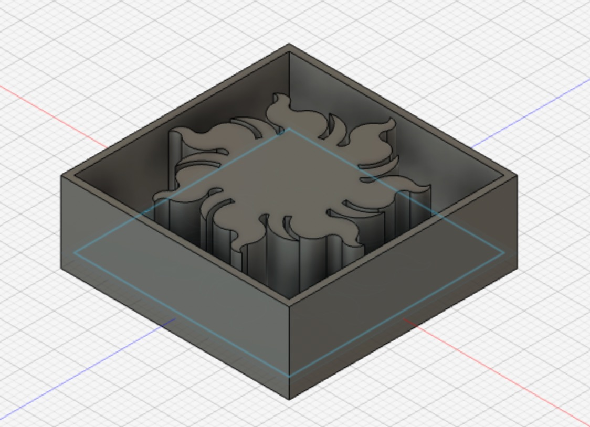
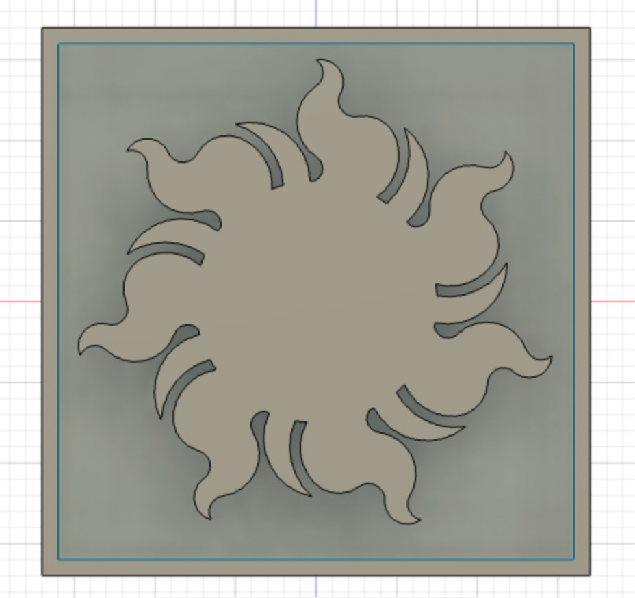
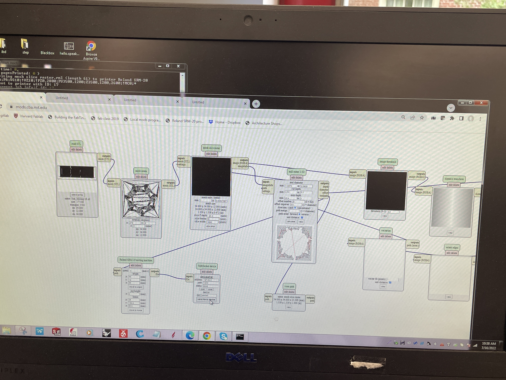
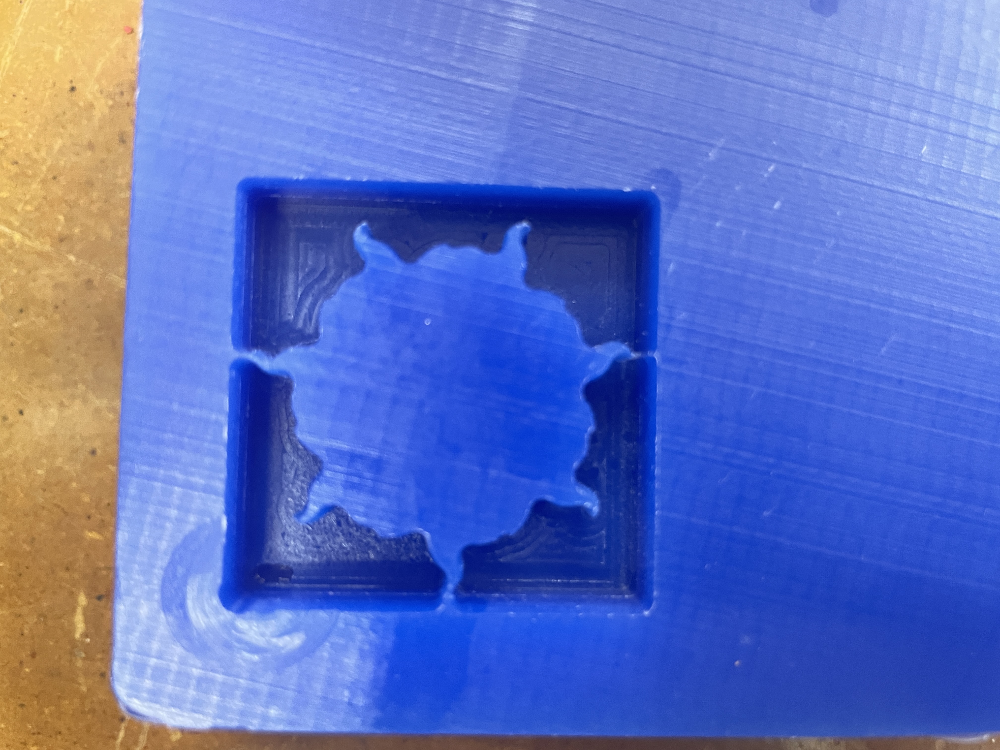
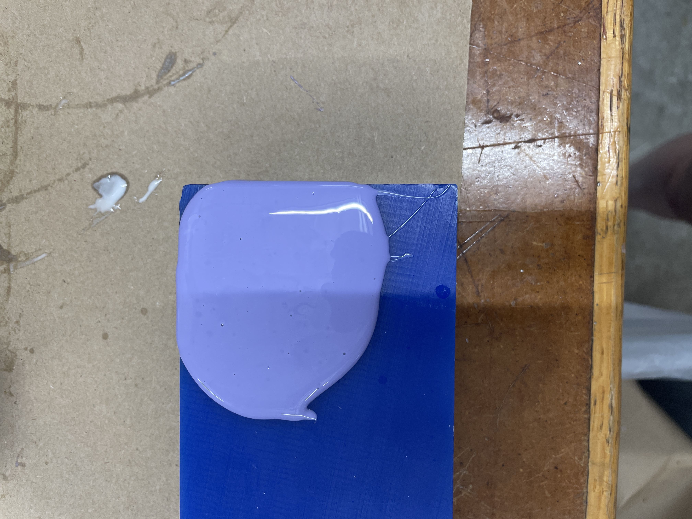
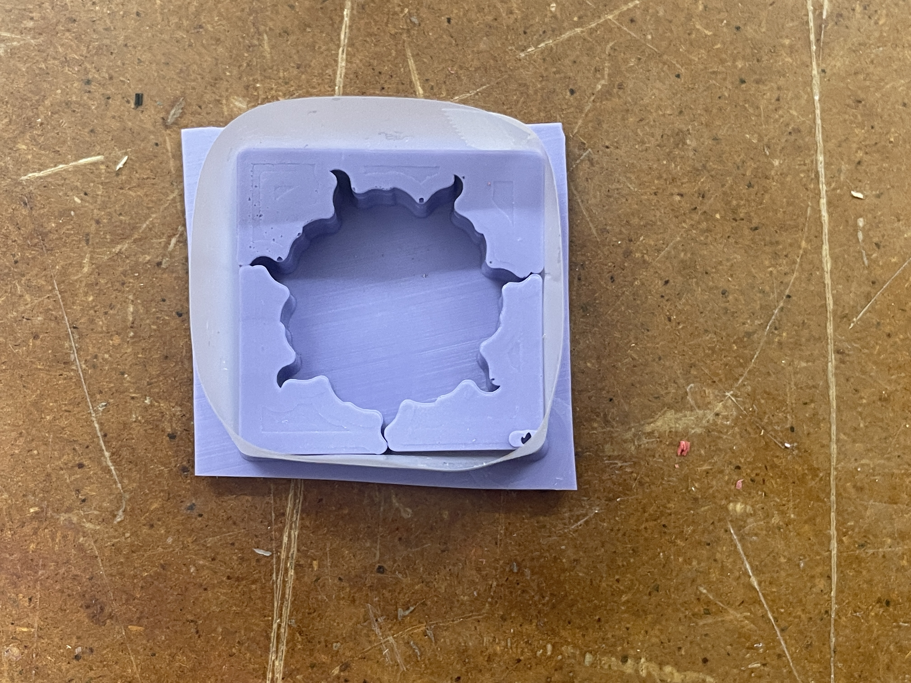
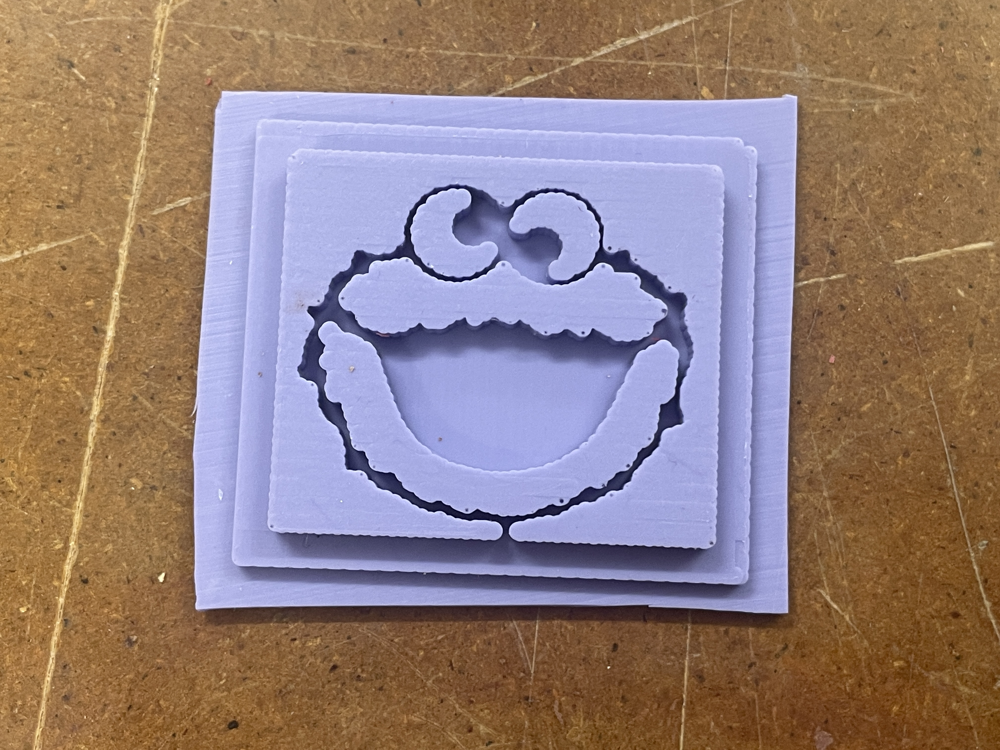

# Week 8: CNC Milling, Molding, and Casting
## Milling:
For the milling, I first created a model in fusion 360 of the model I wanted to create. I made two, because I was unsure how much time it would take and wanted to be able to evaluate the situation before chosing which one to mill.
Here are the files and images of the designs:


[Sun Milling, Bigger Version](https://a360.co/3PCaIK6).
[Sun Milling, Smaller Version](https://a360.co/3o6GZNY).
I ended up chosing the smaller version becasue the larger one would have been far too time consuming.
Here are images of the settings for the milling:

Here are the results:

##Molding
I created my molds using silicon. I mixed a 1:1 ratio of part A and part B, then stirred it until the colour was uniform, and then poured it into my mold. However, I had extra silicon and there was an Elmo carving in my block of waz so I also made an Elmo mold. I then let the mold set for 24 hours until the next lab session, although I doubt it needed that long.
Here are pitcures of the molds and the process:



And here is a [link](../index.html).